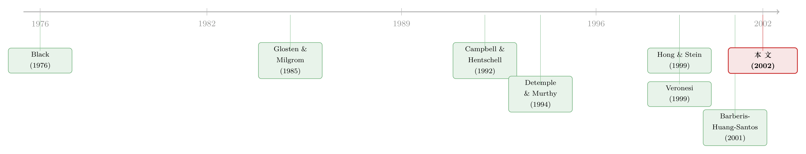

被『晾在场边』的悲观者：一个让股价『无缘无故』暴跌的机制
本文读的是 Veronesi (2002, Review of Financial Studies) 对 Cao、Coval、Hirshleifer（下称 CCH）一文的评论：CCH 用一个高度风格化的交易模型，让「价格上涨把悲观者赶下场，一笔卖单又把他们的坏消息突然倒回市场」这条机制，同时生出了负偏度、波动率聚集与无新信息却大跌三件事；而评论者 Veronesi 的核心追问是——一旦把那个「定生定死」的零买卖价差假设松开，让一个理性的做市商去报价，这套机制还剩多少？
1 一个让人不安的现象
先说一件每个做过市场的人都见过、却很难讲清楚的事：股价并不对称。
一段连续的下跌（rundown）之后，价格往往带着正偏度（positive skewness）——跌到某处，忽然反弹；而一段连续的上涨（run-up）之后，反而是负偏度——涨着涨着，毫无征兆地砸下来。与此同时，大波动总爱扎堆出现，这就是波动率聚集（volatility clustering）；更让人挠头的是，常常没有任何看得见的消息，价格却发生了一次很大的变动。
这三件事——条件偏度依路径而变、条件异方差、以及「无信息的大幅价格变化」——是资产定价里反复出现的老朋友。解释它们的理论多到可以列一张长清单（后文会列）。CCH 这篇文章想做的，是用一个机制把这三件事一次性讲出来。Veronesi 的这篇评论，要做的则是另一件更难、也更有价值的事：把这个机制拆开，看它到底靠什么零件在转，再问哪个零件其实经不起推敲。
这正是一篇好评论该干的活——不复述，而是施压。
2 机制：价格如何把人「晾」在场边
要理解 Veronesi 的批评，得先把 CCH 的机制讲清楚。评论的第 1 节把它压缩成了一条因果链，我们顺着走。
舞台上有四类人：知情交易者（informed traders）、不知情交易者（uninformed traders）、噪声交易者（noise traders），外加一个不知情、且充分竞争的做市商（market maker, MM）。关键设定是：投资者的交易成本是异质的（heterogeneous transaction costs, TCs）——有人交易很贵，有人交易几乎不要钱。
现在一个信号到来，事件像多米诺一样倒下：
- 信号到达 ⟹ 交易成本低的人先动，下单（买或卖）；
- 这笔单子推动价格（比如买单把价推上去），于是产生两个效果——
- (a) 揭示信息：价格本身成了一条消息；
- (b) 让资产变贵。
接着，一个自然的连锁反应出现了。效果 (a) 让乐观者更乐观；而悲观者呢？他们本来就不看好，价格又涨上去了，于是干脆退出市场、不再参与——用 CCH 的话说，他们被「晾在了场边」（sidelined）。如果价格揭示的信息足够强，连那些交易成本更高的乐观者也被吸引进场，继续把价格往上推。
于是到了某个时点，市场出现了一种不对称的库存：还在场上、且乐观的「沉默者」已经不多，而被晾在场边、心里揣着坏消息的悲观者，却相对积压了一大堆。
这一步是全文的题眼。价格上涨不是简单地「反映了好消息」，它还筛选了谁留在场上、谁退到场边。市场的构成被价格本身悄悄改写了——而这正是后面那场暴跌的火药。
真正关键的一步在于：即便经历了一长串买单，一笔卖单的可能性依然存在——因为总有那么一个交易成本极低的悲观者，还想卖。那么，一笔卖单在此刻意味着什么？
由于此前的上涨把收到坏消息的人「晾」走了，一笔卖单会让他们觉得该回场了，从而把自己积压已久的坏消息一次性倒回市场。于是反转出现：这次信息释放会把价格狠狠砸下去——这就是开头说的效果 (i)，上涨后的负偏度。不仅如此，由于信息是突然释放的，做市商对真实状态的不确定性骤增，市场波动随之放大——效果 (ii)。而最妙的是，这一切可以发生在当天没有任何新消息到来的情况下——效果 (iii)，价格凭空大跌。
一个机制，三件事，干净利落。难怪 Veronesi 在结论里也承认这是「a nice model」。
3 把假设一个个拎出来审
但欣赏归欣赏，评论的本职是审问。Veronesi 把 CCH 的假设一条条拎出来过堂，我们挑出真正吃重的几条。
假设一：信息不对称。 这在这类模型里是标配，可以有多种解读，其中最现实的一种是 Glosten 和 Milgrom (1985) 式的「处理公开信息的能力不同」。值得提醒的是：CCH 仍然假设投资者拥有共同先验（common priors），因此它和「意见分歧」（differences of opinion，假设先验本身就不同）那一支文献是两回事——后者如 Detemple & Murthy (1994)、Basak (2000)、Li (2000)。Veronesi 点出二者的实质差别：CCH 里人们会从价格变化中学习；而在意见分歧的世界里，如果大家都知道彼此先验不同，价格变化反而不传递任何新信息——因为每个人都能算出别人收到公开信号后的后验会是什么。这个区分很要紧，它说明 CCH 的引擎是「从价格中学习」，而非单纯的分歧。
假设二：异质交易成本。 这是机制的命门：必须存在交易成本极低的人，在任何价格上都总有人愿意买/卖，否则上面那条因果链的「卖单」一环就断了。Veronesi 顺手递出一个可检验的推论：如果交易成本是行业层面的，那么过去十几年里它大幅下降、且变得更均匀了，按 CCH 的逻辑，今天的条件偏度就应该比二十年前更接近零。这是一个漂亮的时间序列检验。
假设三：风险中性。 看似无害，实则关键。如果投资者风险厌恶，那么在交易成本面前，最优策略是极不频繁地再平衡组合（Constantinides, 1986）——这会让我们很难看到 CCH 所依赖的那种「市场参与度的迅速切换」，效果的幅度会被大大削弱。
假设四：风险中性、且充分竞争的做市商。 Veronesi 把最重的一拳留在了这里——而这恰恰是整篇评论的「一个核心」。
4 核心一击：当做市商被允许报出买卖价差
CCH 里的做市商有一个很强的设定：买价等于卖价（bid = ask），即零买卖价差。这是为了模型可解（tractability）而做的简化，但 Veronesi 认为它在这个模型里尤其致命，理由有二。
第一，理性的做市商不该这么干。 做市商面对的是信息上处于劣势的对手盘，他理应为这份信息劣势索取补偿（Glosten & Milgrom, 1985；Avery & Zemsky, 1998），否则他在这个模型里就不是一个理性的人。
第二，也是更要命的——价差会内生地把效果吃掉。 一旦允许做市商分别设定买价和卖价，那么部分交易成本就从外生变成了内生，并且会依赖于过去的成交。Veronesi 顺着 CCH 自己的那条因果链反推了一遍：
回到第 2 节那个问题——上涨之后一笔卖单的效果是什么？CCH 的答案是：它揭示了被晾在场边的悲观者的信息，于是价格大跌。可是，同样的逻辑也意味着：一个理性的做市商早就预见到了这一点，他会预先把买价压得很低。因为买价（bid）按定义应当等于「在『这是一笔卖单』这一条件下，资产终值的期望」——而按上面那套推理，这个期望在一轮上涨之后会远低于卖价。
于是结果反转了：我们看到的将不再是一次剧烈的价格修正，而是一个很大的买卖价差。换句话说，CCH 那场戏剧性的「凭空暴跌」，在一个会报价的理性做市商手里，会被平滑成一条宽价差——坏消息没有以「价格跳水」的形式爆发，而是以「没人愿意接的低买价」的形式，提前被定价进去了。
Veronesi 自己也老实承认这只是一个启发式（heuristic）论证：一旦价差很宽，参与的人会更少，模型会变得「quite messy to solve」。但方向是清楚的——零价差这个为求解而生的假设，很可能系统性地放大了 CCH 所有结论的幅度。这也是他在结论里最想看到的东西：一组允许买卖价不同的数值结果。
把这一击和假设三连起来看，会发现 Veronesi 的批评有一条统一的主线：CCH 用来换取可解性的两个假设——风险中性与零买卖价差——恰恰都是朝着「放大效果」的方向偏的。 风险中性让参与切换变得过于灵敏，零价差让坏消息以最戏剧化的方式爆发。剔除这两层「人为的放大」之后，效果可能仍然存在，但「到底有多大」就成了一个悬而未决的问题。而偏偏这类模型的校准（calibration）本就极难做，我们甚至说不清什么才算「大效果」。
这就是一篇评论能给出的最高级的东西：不是说「你错了」，而是说「你这套机制的方向是对的，但你把刻度调大了，而真正的刻度我们还不知道」。
5 文献脉络：解释「同一组现象」的众多对手
Veronesi 评论里最见功力的一节，是他把「能解释条件异方差 (1)、路径依赖的条件偏度 (2)、无信息大幅变动 (3)」的所有竞争理论摆上桌，逐一称重。这本身就是一张极好的文献地图，我们按他的分类复述。
第一类，理性预期范式内（他略带调侃地称之为「out of fashion」）。 最古老的是 Black (1976) 的杠杆效应（leverage effect）：股权是带杠杆的，负收益抬高风险、进而抬高波动——能解释 (1) 和部分 (2)。接着是 Campbell & Hentschell (1992) 的波动率反馈（volatility feedback）：大好消息推高价格也推高波动，后者抵消前者；大坏消息压低价格、抬高波动，后者强化前者——同样解释 (1) 和部分 (2)。再然后，是评论者本人那一支——David (1997)、Veronesi (1999) 的波动的不确定性（fluctuating uncertainty）：投资者在学习一个不可观测的基本面状态，「不确定性」随之起伏，于是波动与条件偏度都跟着变——(1) 和 (2) 都能解释。他甚至在脚注里补了一刀：David & Veronesi (2001) 表明，股票收益的风险中性密度在上涨后呈负偏、在下跌后呈正偏——这恰恰是 CCH 想要的图景，却由一个纯理性学习模型给出。

第二类，带「行为色彩」的理论。 Campbell & Cochrane (1999) 的习惯形成与时变风险厌恶：衰退中投资者更怕风险，对消息更敏感，波动放大——解释 (1)。Detemple & Murthy (1994)、Li (2000) 的意见分歧：乐观者与悲观者的占比内生变动，改变了价格对消息的反应弹性——解释 (1)，可能还有 (2)。Hong & Stein (1999) 的带卖空约束的意见分歧：受约束的看空者平时被挡在场外，信息没进价格，等到市场下跌时他们重新入场、释放坏消息，于是跌得更深——读到这里你会会心一笑，因为它和 CCH 的「场边悲观者」简直是同一个故事的两种讲法，只不过一个靠卖空约束、一个靠交易成本把人挡在门外。（关于「沉默的看空者如何让市场只会崩、不会暴涨」，可参见《市场为什么只会「崩」，不会「暴涨」？——一个关于沉默者的故事》。）最后是 Barberis、Huang & Santos (2001) 的心理账户与损失厌恶：人们对损失的痛苦超过对收益的快乐，对坏消息反应更大——解释 (1)。
把这张地图铺开，CCH 的位置就清楚了：它和 Hong-Stein 最近，却换了一个更微观、更高频的引擎——不是卖空约束，而是异质交易成本下「从价格中学习」的动态。Veronesi 据此点出 CCH 区别于所有对手的几条更具体的预测：(1) 交易成本越高、效果越大，可在横截面和时间序列上检验；(2) 反转后波动显著上升——但他立刻指出，在外汇市场上经验规律似乎相反，波动是随趋势上升的（Johnson, 2001）；(3) 持续下跌后的正偏度，期权价格里有一些独立证据支持；(4) 模型更像是为高频数据量身定做——可惜它对成交量没有给出含义，而 Russell、Tsay & Zhang (2000) 已经发现日内存在「高波动+高成交量+大价差」与「低波动+低成交量+小价差」交替的「regime shifts」，CCH 能不能解释这个？
这一连串追问，把一个「能解释三件事」的模型，逼回到了「它到底比对手多预测了什么、又被什么数据顶住了」的硬地面上。
6 评述者的判断
读完，我的判断是这样的。
贡献在于机制的新颖与简洁：用「价格→筛选参与者→不对称库存→一笔反向单引爆」这条链，把负偏度、波动聚集、无信息暴跌三件事一次讲完，且与 Hong-Stein 形成了优雅的对照——把「谁被挡在场外」的原因从卖空约束换成了交易成本，从而天然地搬到了高频微观结构的舞台上。
对识别（更准确说，对模型可信度）的担忧，Veronesi 已经说得很到位，我完全同意他的排序：零买卖价差是最该担心的那一个。它不是一个无害的简化，而是一个会把结论方向性地放大的简化——因为一个理性做市商面对「上涨后卖单必揭坏消息」的逻辑，会用宽价差而非价格跳水来吸收它。风险中性是第二层放大器。两者叠加，让人很难判断 CCH 的效果在一个更现实的世界里究竟是「strong」还是「negligible」。
后续最想看到的，第一是 Veronesi 点名要的那组允许 bid ≠ ask 的数值/校准结果——哪怕只是个粗糙的下界，也能告诉我们刻度。第二是他那个时间序列检验：交易成本在过去几十年大幅下降且趋同，若 CCH 为真，条件偏度的绝对值应当随之衰减。这是个干净、可做、且能直接证伪的预测，遗憾的是这篇评论只是把它指了出来，没人去做。
最后想多说一句。这篇东西本身只是一篇讨论稿（discussion），六页纸，没有自己的数据，没有自己的定理。但它示范了「严谨地读一篇论文」该长什么样：先把机制拆到只剩齿轮，再找出那个为求解而拧紧、却悄悄改变了结论刻度的螺丝，最后把它放回整片文献的地图里称重。比起很多堆满回归表的实证文章，这种「徒手拆引擎」的功夫，反而更难、也更值得学。
评论与延伸（Q&A + 研究方向）
(a) 几个可能的疑问
Q：CCH 和「意见分歧」模型到底差在哪？都是有人乐观有人悲观啊？
差在先验和价格的角色。意见分歧文献（Detemple-Murthy、Li 等）假设投资者先验本身就不同；而 CCH 假设共同先验，分歧来自处理公开信息的能力不同。更本质的区别是：CCH 里人们会从价格变化中学习，价格是信息载体；而在意见分歧世界里，若大家都知道彼此先验不同，价格变化不传递新信息——因为每个人都能算出别人收到公开信号后的后验。所以 CCH 的引擎是「从价格学习」，不是「分歧」本身。
Q：CCH 和 Hong & Stein (1999) 不是几乎一样吗？
故事骨架确实像——都有「平时被挡在场外的看空者，在下跌时回场、释放坏消息、加深下跌」。但把人挡在门外的机制不同：Hong-Stein 靠卖空约束，CCH 靠异质交易成本 + 价格上涨。这个差别让 CCH 天然适配高频微观结构，并给出「交易成本越高效果越大」这种 Hong-Stein 没有的横截面预测。
Q：为什么说「零买卖价差」这个假设特别致命，而不是无伤大雅的简化？
因为它与机制同方向。CCH 的暴跌靠「卖单突然揭示坏消息」实现；可一个理性做市商预见到这件事，会预先把买价压低（买价 = 在「这是卖单」条件下的资产终值期望）。于是坏消息会以「宽价差」而非「价格跳水」的形式被吸收——戏剧性的暴跌被平滑掉了。简化不是让效果小一点，而是让效果以最夸张的形式出现。
Q：风险中性这条假设为什么也会放大效果？
因为在交易成本存在时，风险厌恶的投资者会选择极不频繁地再平衡（Constantinides, 1986）。而 CCH 全靠「市场参与度的快速切换」——乐观者涌入、悲观者瞬间退场。风险厌恶会让这种切换变得迟缓，于是所有效果的幅度都被压低。
Q：有没有现成的经验证据是和 CCH 对着干的？
有一条。CCH 预测「反转后波动上升」，但 Veronesi 指出在外汇市场，经验规律似乎相反——波动是随趋势上升的（Johnson, 2001）。这提示 CCH 的机制可能依赖于股票市场特有的交易者/交易结构，未必能平移到货币市场。
Q：既然批评这么多，为什么 Veronesi 最后还是说这是个「nice model」？
因为他批评的是刻度，不是方向。机制是新的、自洽的、且能一口气解释三件难事；问题在于两个为求解而设的假设把效果放大了，使我们无法判断「真实刻度」。他要的不是推翻，而是一组剔除放大器之后的数值结果——这恰恰是建设性评论的姿态。
(b) 几个可能的研究问题与提案
1. 交易成本下降 ⟹ 条件偏度衰减？（直接检验 CCH 的核心横截面/时序预测）
【经济故事】CCH 预测交易成本越高、条件偏度（绝对值）越大。过去三十年交易成本大幅下降且趋同，若机制为真，市场与个股的路径依赖条件偏度应随之向零收敛。 【可行性】高。用美股长样本，按 tick size 改革、佣金自由化、十进制化等节点切分，估计「上涨后/下跌后」的条件偏度随时间的变化；横截面上用流动性/交易成本代理排序。数据现成，识别靠制度断点，doable。
2. 把机制搬到公司债：交易成本极高的市场里，「场边的悲观者」是否更显著？
【经济故事】公司债交易成本远高于股票、且高度异质，正是 CCH 机制的「放大版」。上涨后一笔卖单是否带来比股市更剧烈的负偏与波动跳升？ 【可行性】中。用 TRACE 逐笔成交，构造单券层面的路径依赖偏度与价差。难点在于公司债成交稀疏、价差内生且巨大——但这恰恰能直接检验 Veronesi 的核心批评：当价差很宽时，坏消息是以「宽价差」还是「价格跳水」释放？（关于用更稳的尺子量公司债流动性，可参见《把「成交价」从「成交量」里解放出来——重新丈量公司债的流动性》。）
3. 重解一个允许 bid ≠ ask 的版本，量出「零价差」到底放大了多少。
【经济故事】这正是 Veronesi 点名想看的：把做市商的买卖价差内生化，看 CCH 的负偏度/波动跳升被削弱多少。 【可行性】中偏低。Veronesi 自己也说，价差一宽参与者就变少、模型「quite messy」。但即便只做数值解或给出效果的上界，也有清晰增量。属于理论/计算工作，难在求解而非数据。
4. 外资持有人 vs. 本地交易者：谁更容易被「晾在场边」？
【经济故事】外资通常交易成本更高、信息处理更慢，按 CCH 逻辑更易在上涨中退场、在下跌中集中回场，从而放大反转。 【可行性】中。需带交易者身份标签的逐笔数据（如韩国 KRX 类数据集），按本地/外资分组，检验各自的参与度是否随价格路径不对称切换。识别清晰，瓶颈是数据获取。
5. 成交量含义的补全：CCH 能否解释日内的「regime shift」？
【经济故事】CCH 对成交量沉默，而 Russell-Tsay-Zhang (2000) 发现日内存在「高波动+高量+大价差」与「低波动+低量+小价差」的交替。能否用买/卖单占做市商订单流的比例代理成交量，让 CCH 生出成交量含义并匹配这种 regime shift？ 【可行性】中。需高频 LOB 数据与一个扩展模型。先做实证刻画（哪些路径触发 regime 切换），再回头约束理论，是一条可分阶段推进的路线。
参考文献
Avery, C., and P. Zemsky (1998). Multidimensional Uncertainty and Herd Behavior in Financial Markets. American Economic Review 88, 724–748.
Barberis, N., M. Huang, and T. Santos (2001). Prospect Theory and Asset Prices. Quarterly Journal of Economics 116, 1–53.
Basak, S. (2000). A Model of Dynamic Equilibrium Asset Pricing with Heterogeneous Beliefs and Extraneous Risk. Journal of Economic Dynamics and Control 24, 63–95.
Basak, S., and B. Croitoru (2000). Equilibrium Mispricing in a Capital Market with Portfolio Constraints. Review of Financial Studies 13, 715–748.
Black, F. (1976). Studies of Stock Price Volatility Changes. Proceedings of the 1976 Meetings of the Business and Economic Statistics Section, American Statistical Association.
Campbell, J. Y., and J. H. Cochrane (1999). By Force of Habit: A Consumption-Based Explanation of Aggregate Stock Market Behavior. Journal of Political Economy 107, 205–251.
Campbell, J. Y., and R. Hentschell (1992). No News is Good News: An Asymmetric Model of Changing Volatility in Stock Returns. Journal of Financial Economics 31, 281–318.
Constantinides, G. (1986). Capital Market Equilibrium with Transaction Costs. Journal of Political Economy 94, 842–862.
David, A. (1997). Fluctuating Confidence in Stock Markets: Implications for Returns and Volatility. Journal of Financial and Quantitative Analysis 32, 427–462.
David, A., and P. Veronesi (2001). Option Prices with Uncertain Fundamentals: Theory and Evidence on the Dynamics of Implied Volatilities. CRSP working paper, University of Chicago.
Detemple, J. B., and S. Murthy (1994). Intertemporal Asset Pricing with Heterogeneous Beliefs. Journal of Economic Theory 62, 294–320.
Glosten, L., and P. Milgrom (1985). Bid, Ask and Transaction Prices in a Specialist Market with Heterogeneously Informed Traders. Journal of Financial Economics 14, 275–298.
Hong, H., and J. Stein (1999). Differences of Opinions, Rational Arbitrage and Market Crashes. Working paper, Stanford University.
Johnson, T. (2001). Volatility, Momentum, and Time-Varying Skewness in Foreign Exchange Returns. IFA working paper, London Business School.
Li, T. (2000). Heterogeneous Beliefs, Asset Prices, and Volatility in a Pure Exchange Economy. Mimeo.
Russell, J., R. Tsay, and M. Zhang (2000). Information Determinants of Bid and Ask Quotes: Implications for Market Liquidity and Volatility. Working paper, University of Chicago.
Veronesi, P. (1999). Stock Market Overreaction to Bad News in Good Times: A Rational Expectations Equilibrium Model. Review of Financial Studies 12, 975–1007.